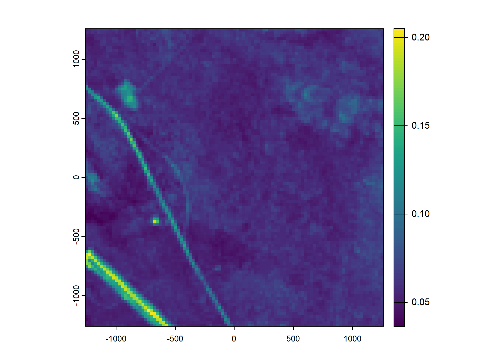

deepSSF Data Prep - S2
![]()
This document outlines the steps taken to prepare the data for the deepSSF model fitting, using Sentinel-2 data directly (instead of derived covariates such as NDVI).
Loading packages
Import data and clean
New names:
Rows: 133161 Columns: 11
── Column specification
──────────────────────────────────────────────────────── Delimiter: "," chr
(2): node, dates dbl (7): ...1, lat, lon, height, accuracy, heading, speed dttm
(2): timestamp, DateTime
ℹ Use `spec()` to retrieve the full column specification for this data. ℹ
Specify the column types or set `show_col_types = FALSE` to quiet this message.
• `` -> `...1`Code
# remove individuals that have poor data quality or less than about 3 months of data.
# The "2014.GPS_COMPACT copy.csv" string is a duplicate of ID 2024, so we exlcude it
buffalo <- buffalo %>% filter(!node %in% c("2014.GPS_COMPACT copy.csv",
# 2005, 2014, 2018, 2021, 2022, 2024,
2029, 2043, 2265, 2284, 2346, 2354))
buffalo <- buffalo %>%
group_by(node) %>%
arrange(DateTime, .by_group = T) %>%
distinct(DateTime, .keep_all = T) %>%
arrange(node) %>%
mutate(ID = node)
buffalo_clean <- buffalo[, c(12, 2, 4, 3)]
colnames(buffalo_clean) <- c("id", "time", "lon", "lat")
attr(buffalo_clean$time, "tzone") <- "Australia/Queensland"
head(buffalo_clean)[1] "Australia/Queensland"Setup trajectory
Use the amt package to create a trajectory object from the cleaned data.
Plot the data coloured by time
Reading in the environmental covariates

Sentinel-2 spectral layers
Create vector of dates. We just use the 15th of the month (the layers were averaged across the month).
Import the layers and add times
Each of these stacks are one month of the 12 bands of Sentinel-2 data. Initially they are at 10m resolution, but we resample them to 25m to match the resolution of the slope layer.
We save each of the scaled rasters such that we can import them when we simulate from the deepSSF model using the Sentinel-2 data.
As the resampling takes some time, we have commented this code out and read in the resampled and scaled layers direclty in the next code chunk.
Code
# ### January 2019
# s2_10m_2019_01 <- rast("mapping/cropped rasters/sentinel2/10m/S2_SR_masked_2019_01.tif")
# terra::time(s2_10m_2019_01) <- rep(as.POSIXct(lubridate::ymd("2019-01-15"),
# tz = "Australia/Queensland"),
# nlyr(s2_10m_2019_01))
# s2_25m_2019_01 <- terra::resample(s2_10m_2019_01, slope, method = "bilinear")
# s2_25m_2019_01 <- s2_25m_2019_01 / 10000
# # to save the scaled raster to file for reading when simulating from the deepSSF model
# # writeRaster(s2_25m_2019_01, "mapping/cropped rasters/sentinel2/25m/S2_SR_masked_scaled_25m_2019_01.tif", overwrite = T)
#
#
# ### February 2019
# s2_10m_2019_02 <- rast("mapping/cropped rasters/sentinel2/10m/S2_SR_masked_2019_02.tif")
# terra::time(s2_10m_2019_02) <- rep(as.POSIXct(lubridate::ymd("2019-02-15"),
# tz = "Australia/Queensland"),
# nlyr(s2_10m_2019_02))
# s2_25m_2019_02 <- terra::resample(s2_10m_2019_02, slope, method = "bilinear")
# s2_25m_2019_02 <- s2_25m_2019_02 / 10000
# # writeRaster(s2_25m_2019_02, "mapping/cropped rasters/sentinel2/25m/S2_SR_masked_scaled_25m_2019_02.tif", overwrite = T)
#
# ### March 2019
# s2_10m_2019_03 <- rast("mapping/cropped rasters/sentinel2/10m/S2_SR_masked_2019_03.tif")
# terra::time(s2_10m_2019_03) <- rep(as.POSIXct(lubridate::ymd("2019-03-15"),
# tz = "Australia/Queensland"),
# nlyr(s2_10m_2019_03))
# s2_25m_2019_03 <- terra::resample(s2_10m_2019_03, slope, method = "bilinear")
# s2_25m_2019_03 <- s2_25m_2019_03 / 10000
# # writeRaster(s2_25m_2019_03, "mapping/cropped rasters/sentinel2/25m/S2_SR_masked_scaled_25m_2019_03.tif", overwrite = T)
#
# ### April 2019
# s2_10m_2019_04 <- rast("mapping/cropped rasters/sentinel2/10m/S2_SR_masked_2019_04.tif")
# terra::time(s2_10m_2019_04) <- rep(as.POSIXct(lubridate::ymd("2019-04-15"),
# tz = "Australia/Queensland"),
# nlyr(s2_10m_2019_04))
# s2_25m_2019_04 <- terra::resample(s2_10m_2019_04, slope, method = "bilinear")
# s2_25m_2019_04 <- s2_25m_2019_04 / 10000
# # writeRaster(s2_25m_2019_04, "mapping/cropped rasters/sentinel2/25m/S2_SR_masked_scaled_25m_2019_04.tif", overwrite = T)
#
#
# ### May 2019
# s2_10m_2019_05 <- rast("mapping/cropped rasters/sentinel2/10m/S2_SR_masked_2019_05.tif")
# terra::time(s2_10m_2019_05) <- rep(as.POSIXct(lubridate::ymd("2019-05-15"),
# tz = "Australia/Queensland"),
# nlyr(s2_10m_2019_05))
# s2_25m_2019_05 <- terra::resample(s2_10m_2019_05, slope, method = "bilinear")
# s2_25m_2019_05 <- s2_25m_2019_05 / 10000
# # writeRaster(s2_25m_2019_05, "mapping/cropped rasters/sentinel2/25m/S2_SR_masked_scaled_25m_2019_05.tif", overwrite = T)
#
# ### June 2019
# s2_10m_2019_06 <- rast("mapping/cropped rasters/sentinel2/10m/S2_SR_masked_2019_06.tif")
# # plot(s2_10m_2019_06[[2]])
# terra::time(s2_10m_2019_06) <- rep(as.POSIXct(lubridate::ymd("2019-06-15"),
# tz = "Australia/Queensland"),
# nlyr(s2_10m_2019_06))
# s2_25m_2019_06 <- terra::resample(s2_10m_2019_06, slope, method = "bilinear")
# s2_25m_2019_06 <- s2_25m_2019_06 / 10000
# # writeRaster(s2_25m_2019_06, "mapping/cropped rasters/sentinel2/25m/S2_SR_masked_scaled_25m_2019_06.tif", overwrite = T)
#
# ### July 2019
# s2_10m_2019_07 <- rast("mapping/cropped rasters/sentinel2/10m/S2_SR_masked_2019_07.tif")
# terra::time(s2_10m_2019_07) <- rep(as.POSIXct(lubridate::ymd("2019-07-15"),
# tz = "Australia/Queensland"),
# nlyr(s2_10m_2019_07))
# s2_25m_2019_07 <- terra::resample(s2_10m_2019_07, slope, method = "bilinear")
# s2_25m_2019_07 <- s2_25m_2019_07 / 10000
# # writeRaster(s2_25m_2019_07, "mapping/cropped rasters/sentinel2/25m/S2_SR_masked_scaled_25m_2019_07.tif", overwrite = T)
#
# ### August 2019
# s2_10m_2019_08 <- rast("mapping/cropped rasters/sentinel2/10m/S2_SR_masked_2019_08.tif")
# terra::time(s2_10m_2019_08) <- rep(as.POSIXct(lubridate::ymd("2019-08-15"),
# tz = "Australia/Queensland"),
# nlyr(s2_10m_2019_08))
# s2_25m_2019_08 <- terra::resample(s2_10m_2019_08, slope, method = "bilinear")
# s2_25m_2019_08 <- s2_25m_2019_08 / 10000
# # writeRaster(s2_25m_2019_08, "mapping/cropped rasters/sentinel2/25m/S2_SR_masked_scaled_25m_2019_08.tif", overwrite = T)
#
# ### September 2019
# s2_10m_2019_09 <- rast("mapping/cropped rasters/sentinel2/10m/S2_SR_masked_2019_09.tif")
# terra::time(s2_10m_2019_09) <- rep(as.POSIXct(lubridate::ymd("2019-09-15"),
# tz = "Australia/Queensland"),
# nlyr(s2_10m_2019_09))
# s2_25m_2019_09 <- terra::resample(s2_10m_2019_09, slope, method = "bilinear")
# s2_25m_2019_09 <- s2_25m_2019_09 / 10000
# # writeRaster(s2_25m_2019_09, "mapping/cropped rasters/sentinel2/25m/S2_SR_masked_scaled_25m_2019_09.tif", overwrite = T)
#
# ### October 2019
# s2_10m_2019_10 <- rast("mapping/cropped rasters/sentinel2/10m/S2_SR_masked_2019_10.tif")
# terra::time(s2_10m_2019_10) <- rep(as.POSIXct(lubridate::ymd("2019-10-15"),
# tz = "Australia/Queensland"),
# nlyr(s2_10m_2019_10))
# s2_25m_2019_10 <- terra::resample(s2_10m_2019_10, slope, method = "bilinear")
# s2_25m_2019_10 <- s2_25m_2019_10 / 10000
# # writeRaster(s2_25m_2019_10, "mapping/cropped rasters/sentinel2/25m/S2_SR_masked_scaled_25m_2019_10.tif", overwrite = T)
#
# ### November 2019
# s2_10m_2019_11 <- rast("mapping/cropped rasters/sentinel2/10m/S2_SR_masked_2019_11.tif")
# terra::time(s2_10m_2019_11) <- rep(as.POSIXct(lubridate::ymd("2019-11-15"),
# tz = "Australia/Queensland"),
# nlyr(s2_10m_2019_11))
# s2_25m_2019_11 <- terra::resample(s2_10m_2019_11, slope, method = "bilinear")
# s2_25m_2019_11 <- s2_25m_2019_11 / 10000
# # writeRaster(s2_25m_2019_11, "mapping/cropped rasters/sentinel2/25m/S2_SR_masked_scaled_25m_2019_11.tif", overwrite = T)
#
# ### December 2019
# s2_10m_2019_12 <- rast("mapping/cropped rasters/sentinel2/10m/S2_SR_masked_2019_12.tif")
# terra::time(s2_10m_2019_12) <- rep(as.POSIXct(lubridate::ymd("2019-12-15"),
# tz = "Australia/Queensland"),
# nlyr(s2_10m_2019_12))
# s2_25m_2019_12 <- terra::resample(s2_10m_2019_12, slope, method = "bilinear")
# s2_25m_2019_12 <- s2_25m_2019_12 / 10000
# # writeRaster(s2_25m_2019_12, "mapping/cropped rasters/sentinel2/25m/S2_SR_masked_scaled_25m_2019_12.tif", overwrite = T)Each raster stack contains the Sentinel 2 bands for a given month in 2019, and have been scaled by 10,000 from what was downloaded from GEE.
Code
s2_25m_2019_01 <- rast("mapping/cropped rasters/sentinel2/25m/S2_SR_masked_scaled_25m_2019_01.tif")
s2_25m_2019_02 <- rast("mapping/cropped rasters/sentinel2/25m/S2_SR_masked_scaled_25m_2019_02.tif")
s2_25m_2019_03 <- rast("mapping/cropped rasters/sentinel2/25m/S2_SR_masked_scaled_25m_2019_03.tif")
s2_25m_2019_04 <- rast("mapping/cropped rasters/sentinel2/25m/S2_SR_masked_scaled_25m_2019_04.tif")
s2_25m_2019_05 <- rast("mapping/cropped rasters/sentinel2/25m/S2_SR_masked_scaled_25m_2019_05.tif")
s2_25m_2019_06 <- rast("mapping/cropped rasters/sentinel2/25m/S2_SR_masked_scaled_25m_2019_06.tif")
s2_25m_2019_07 <- rast("mapping/cropped rasters/sentinel2/25m/S2_SR_masked_scaled_25m_2019_07.tif")
s2_25m_2019_08 <- rast("mapping/cropped rasters/sentinel2/25m/S2_SR_masked_scaled_25m_2019_08.tif")
s2_25m_2019_09 <- rast("mapping/cropped rasters/sentinel2/25m/S2_SR_masked_scaled_25m_2019_09.tif")
s2_25m_2019_10 <- rast("mapping/cropped rasters/sentinel2/25m/S2_SR_masked_scaled_25m_2019_10.tif")
s2_25m_2019_11 <- rast("mapping/cropped rasters/sentinel2/25m/S2_SR_masked_scaled_25m_2019_11.tif")
s2_25m_2019_12 <- rast("mapping/cropped rasters/sentinel2/25m/S2_SR_masked_scaled_25m_2019_12.tif")
s2_25m_2019_01class : SpatRaster
dimensions : 2280, 2400, 12 (nrow, ncol, nlyr)
resolution : 25, 25 (x, y)
extent : 0, 60000, -1463000, -1406000 (xmin, xmax, ymin, ymax)
coord. ref. : GDA94 / Geoscience Australia Lambert (EPSG:3112)
source : S2_SR_masked_scaled_25m_2019_01.tif
names : B1, B2, B3, B4, B5, B6, ...
min values : 0.002600, 0.00298288, 0.01064496, 0.0101952, 0.01207968, 0.01042128, ...
max values : 0.313051, 0.40625551, 0.48839232, 0.5488096, 0.58363509, 0.57049966, ...
time : 2019-01-15 UTC Combine into a list
Code
[1] "B1" "B2" "B3" "B4" "B5" "B6" "B7" "B8" "B8A" "B9" "B11" "B12"Generating the data to fit a deepSSF model
Set up the spatial extent of the local covariates
Code
buffalo_all <- buffalo_all %>%
arrange(id, t_)
# create a vector of ids
buffalo_ids <- unique(buffalo_all$id)
# get the resolution from the covariates
res <- terra::res(slope)[1]
# how much to trim on either side of the location,
# this will determine the extent of the spatial inputs to the deepSSF model
buffer <- 1250 + (res/2)
# calculate the number of cells in each axis
nxn_cells <- buffer*2/res
# hourly lag - to set larger time differences between locations
hourly_lag <- 1Loop over each individual and save the local rasters
Code
for(i in 1:length(buffalo_ids)) {
buffalo_data <- buffalo_all %>% filter(id == buffalo_ids[i])
# all data for that individual
# buffalo_data <- buffalo_data %>% arrange(t_)
# a subset of the data for that individual - mostly for testing
buffalo_data <- buffalo_data %>% arrange(t_) %>% slice(1:10)
n_samples <- nrow(buffalo_data)
tic()
buffalo_data_covs <- buffalo_data %>% mutate(
x1_ = x_,
y1_ = y_,
x2_ = lead(x1_, n = hourly_lag, default = NA),
y2_ = lead(y1_, n = hourly_lag, default = NA),
x2_cent = x2_ - x1_,
y2_cent = y2_ - y1_,
t2_ = lead(t_, n = hourly_lag, default = NA),
t_diff = round(difftime(t2_, t_, units = "hours"),0),
hour_t1 = lubridate::hour(t_),
yday_t1 = lubridate::yday(t_),
hour_t2 = lubridate::hour(t2_),
hour_t2_sin = sin(2*pi*hour_t2/24),
hour_t2_cos = cos(2*pi*hour_t2/24),
yday_t2 = lubridate::yday(t2_),
yday_t2_sin = sin(2*pi*yday_t2/365.25),
yday_t2_cos = cos(2*pi*yday_t2/365.25),
sl = c(sqrt(diff(y_)^2 + diff(x_)^2), NA),
log_sl = log(sl),
bearing = c(atan2(diff(y_), diff(x_)), NA),
bearing_sin = sin(bearing),
bearing_cos = cos(bearing),
ta = c(NA, ifelse(
diff(bearing) > pi, diff(bearing)-(2*pi), ifelse(
diff(bearing) < -pi, diff(bearing)+(2*pi), diff(bearing)))),
cos_ta = cos(ta),
# extent for cropping the spatial covariates
x_min = x_ - buffer,
x_max = x_ + buffer,
y_min = y_ - buffer,
y_max = y_ + buffer
# crop out and store the local covariates centered on the animal's location
# with an extent set in the previous chunk
) %>% rowwise() %>% mutate(
extent_00centre = list(ext(x_min - x_, x_max - x_, y_min - y_, y_max - y_)),
# Sentinel 2
s2_index = which.min(abs(lubridate::month(t_) - lubridate::month(dates))),
# Band 1
s2_b1_cent = list({
s2_b1_cent = crop( s2_list[[s2_index]][[1]], ext(x_min, x_max, y_min, y_max))
ext(s2_b1_cent) <- extent_00centre
s2_b1_cent
}),
# Band 2
s2_b2_cent = list({
s2_b2_cent = crop( s2_list[[s2_index]][[2]], ext(x_min, x_max, y_min, y_max))
ext(s2_b2_cent) <- extent_00centre
s2_b2_cent
}),
# Band 3
s2_b3_cent = list({
s2_b3_cent = crop( s2_list[[s2_index]][[3]], ext(x_min, x_max, y_min, y_max))
ext(s2_b3_cent) <- extent_00centre
s2_b3_cent
}),
# Band 4
s2_b4_cent = list({
s2_b4_cent = crop( s2_list[[s2_index]][[4]], ext(x_min, x_max, y_min, y_max))
ext(s2_b4_cent) <- extent_00centre
s2_b4_cent
}),
# Band 5
s2_b5_cent = list({
s2_b5_cent = crop( s2_list[[s2_index]][[5]], ext(x_min, x_max, y_min, y_max))
ext(s2_b5_cent) <- extent_00centre
s2_b5_cent
}),
# Band 6
s2_b6_cent = list({
s2_b6_cent = crop( s2_list[[s2_index]][[6]], ext(x_min, x_max, y_min, y_max))
ext(s2_b6_cent) <- extent_00centre
s2_b6_cent
}),
# Band 7
s2_b7_cent = list({
s2_b7_cent = crop( s2_list[[s2_index]][[7]], ext(x_min, x_max, y_min, y_max))
ext(s2_b7_cent) <- extent_00centre
s2_b7_cent
}),
# Band 8
s2_b8_cent = list({
s2_b8_cent = crop( s2_list[[s2_index]][[8]], ext(x_min, x_max, y_min, y_max))
ext(s2_b8_cent) <- extent_00centre
s2_b8_cent
}),
# Band 8A
s2_b8a_cent = list({
s2_b8a_cent = crop( s2_list[[s2_index]][[9]], ext(x_min, x_max, y_min, y_max))
ext(s2_b8a_cent) <- extent_00centre
s2_b8a_cent
}),
# Band 9
s2_b9_cent = list({
s2_b9_cent = crop( s2_list[[s2_index]][[10]], ext(x_min, x_max, y_min, y_max))
ext(s2_b9_cent) <- extent_00centre
s2_b9_cent
}),
# Band 11
s2_b11_cent = list({
s2_b11_cent = crop( s2_list[[s2_index]][[11]], ext(x_min, x_max, y_min, y_max))
ext(s2_b11_cent) <- extent_00centre
s2_b11_cent
}),
# Band 12
s2_b12_cent = list({
s2_b12_cent = crop( s2_list[[s2_index]][[12]], ext(x_min, x_max, y_min, y_max))
ext(s2_b12_cent) <- extent_00centre
s2_b12_cent
}),
# slope
slope_cent = list({
slope_cent <- crop(slope, ext(x_min, x_max, y_min, y_max))
ext(slope_cent) <- extent_00centre
slope_cent
}),
# rasterised location of the next step - centred on (0,0)
points_vect_cent = list(terra::vect(cbind(x2_ - x_, y2_ - y_), type = "points", crs = "EPSG:3112")),
pres_cent = list(rasterize(points_vect_cent, s2_b1_cent, background=0))
) %>% ungroup() # to remove the 'rowwise' class
toc()
# remove steps that fall outside of the local spatial extent
buffalo_data_covs <- buffalo_data_covs %>%
filter(x2_cent > -buffer & x2_cent < buffer & y2_cent > -buffer & y2_cent < buffer) %>%
drop_na(ta)
buffalo_data_df <- buffalo_data_covs %>%
dplyr::select(-extent_00centre,
-s2_b1_cent,
-s2_b2_cent,
-s2_b3_cent,
-s2_b4_cent,
-s2_b5_cent,
-s2_b6_cent,
-s2_b7_cent,
-s2_b8_cent,
-s2_b8a_cent,
-s2_b9_cent,
-s2_b11_cent,
-s2_b12_cent,
-slope_cent,
-points_vect_cent,
-pres_cent
)
# save the data
write_csv(buffalo_data_df, paste0("buffalo_local_data_id/website_temp/buffalo_", buffalo_ids[i],
"_data_df_lag_", hourly_lag, "hr_n", n_samples, ".csv"))
# saving the raster objects
rast(buffalo_data_covs$s2_b1_cent) %>%
writeRaster(paste0("buffalo_local_layers_id/buffalo_", buffalo_ids[i], "_s2_b1_cent",
nxn_cells, "x", nxn_cells, "_lag_", hourly_lag, "hr_n", n_samples, ".tif"),
overwrite = T)
rast(buffalo_data_covs$s2_b2_cent) %>%
writeRaster(paste0("buffalo_local_layers_id/buffalo_", buffalo_ids[i], "_s2_b2_cent",
nxn_cells, "x", nxn_cells, "_lag_", hourly_lag, "hr_n", n_samples, ".tif"),
overwrite = T)
rast(buffalo_data_covs$s2_b3_cent) %>%
writeRaster(paste0("buffalo_local_layers_id/buffalo_", buffalo_ids[i], "_s2_b3_cent",
nxn_cells, "x", nxn_cells, "_lag_", hourly_lag, "hr_n", n_samples, ".tif"),
overwrite = T)
rast(buffalo_data_covs$s2_b4_cent) %>%
writeRaster(paste0("buffalo_local_layers_id/buffalo_", buffalo_ids[i], "_s2_b4_cent",
nxn_cells, "x", nxn_cells, "_lag_", hourly_lag, "hr_n", n_samples, ".tif"),
overwrite = T)
rast(buffalo_data_covs$s2_b5_cent) %>%
writeRaster(paste0("buffalo_local_layers_id/buffalo_", buffalo_ids[i], "_s2_b5_cent",
nxn_cells, "x", nxn_cells, "_lag_", hourly_lag, "hr_n", n_samples, ".tif"),
overwrite = T)
rast(buffalo_data_covs$s2_b6_cent) %>%
writeRaster(paste0("buffalo_local_layers_id/buffalo_", buffalo_ids[i], "_s2_b6_cent",
nxn_cells, "x", nxn_cells, "_lag_", hourly_lag, "hr_n", n_samples, ".tif"),
overwrite = T)
rast(buffalo_data_covs$s2_b7_cent) %>%
writeRaster(paste0("buffalo_local_layers_id/buffalo_", buffalo_ids[i], "_s2_b7_cent",
nxn_cells, "x", nxn_cells, "_lag_", hourly_lag, "hr_n", n_samples, ".tif"),
overwrite = T)
rast(buffalo_data_covs$s2_b8_cent) %>%
writeRaster(paste0("buffalo_local_layers_id/buffalo_", buffalo_ids[i], "_s2_b8_cent",
nxn_cells, "x", nxn_cells, "_lag_", hourly_lag, "hr_n", n_samples, ".tif"),
overwrite = T)
rast(buffalo_data_covs$s2_b8a_cent) %>%
writeRaster(paste0("buffalo_local_layers_id/buffalo_", buffalo_ids[i], "_s2_b8a_cent",
nxn_cells, "x", nxn_cells, "_lag_", hourly_lag, "hr_n", n_samples, ".tif"),
overwrite = T)
rast(buffalo_data_covs$s2_b9_cent) %>%
writeRaster(paste0("buffalo_local_layers_id/buffalo_", buffalo_ids[i], "_s2_b9_cent",
nxn_cells, "x", nxn_cells, "_lag_", hourly_lag, "hr_n", n_samples, ".tif"),
overwrite = T)
rast(buffalo_data_covs$s2_b11_cent) %>%
writeRaster(paste0("buffalo_local_layers_id/buffalo_", buffalo_ids[i], "_s2_b11_cent",
nxn_cells, "x", nxn_cells, "_lag_", hourly_lag, "hr_n", n_samples, ".tif"),
overwrite = T)
rast(buffalo_data_covs$s2_b12_cent) %>%
writeRaster(paste0("buffalo_local_layers_id/buffalo_", buffalo_ids[i], "_s2_b12_cent",
nxn_cells, "x", nxn_cells, "_lag_", hourly_lag, "hr_n", n_samples, ".tif"),
overwrite = T)
rast(buffalo_data_covs$pres_cent) %>%
writeRaster(paste0("buffalo_local_layers_id/buffalo_", buffalo_ids[i], "_pres_cent",
nxn_cells, "x", nxn_cells, "_lag_", hourly_lag, "hr_n", n_samples, ".tif"),
overwrite = T)
}8.94 sec elapsed
6.18 sec elapsed
6.11 sec elapsed
5.83 sec elapsed
6.31 sec elapsed
5.87 sec elapsed
6.25 sec elapsed
5.96 sec elapsed
6.11 sec elapsed
5.92 sec elapsed
6.25 sec elapsed
6.23 sec elapsed
7.09 sec elapsedCheck the outputs
Plot a subset of the local covariates
Code
n_plots <- 5
for(i in 1:n_plots){
# Blue layer
terra::plot(buffalo_data_covs$s2_b2_cent[[i]])
# Red layer
terra::plot(buffalo_data_covs$s2_b3_cent[[i]])
# Green layer
terra::plot(buffalo_data_covs$s2_b4_cent[[i]])
# Plot as RGB image
rgb_image <- c(buffalo_data_covs$s2_b4_cent[[i]]*1e4,
buffalo_data_covs$s2_b3_cent[[i]]*1e4,
buffalo_data_covs$s2_b2_cent[[i]]*1e4)
terra::plotRGB(rgb_image, r = 1, g = 2, b = 3,
smooth = FALSE, mar = 1.5, axes = TRUE) # adjust 'scale' if needed
# Save plot as a PNG image
# Create the graphic device
png(paste0("outputs/rgb_local_env_", i, ".png"),
width = 120, height = 120, units = "mm", res = 600)
# Plot the RGB image
terra::plotRGB(rgb_image, r = 1, g = 2, b = 3,
smooth = FALSE, mar = 1.5, axes = TRUE)
# Close the graphic device to save the file
dev.off()
}


